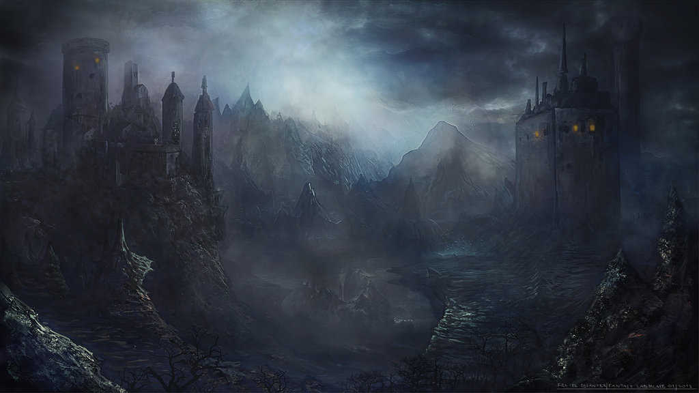

Dark fantasy

Dark fantasy łączy ze sobą fantasy i horror. Najbardziej typowymi dziełami z gatunku dark fantasy są utwory H. P. Lovecrafta, które łączą w sobie fantasy i horror, a nie da się przydzielić ich do innej grupy. Ponieważ dark fantasy nie jest zdefiniowana w przejrzysty sposób, czasami ciężko jest stwierdzić, czy dane dzieło należy do gatunku dark fantasy, czy jest to zwykłe fantasy. Najłatwiej zauważyć to na przykładzie gier fabularnych: mnogość światów określanych jako fantasy można zaliczyć także do dark fantasy.
Dark fantasy w pozostałych tekstach kultury
Świat gry komputerowej Diablo także może być uważany za dark fantasy. W odróżnieniu od „typowego” fantasy, jakim jest na przykład świat Warcraft, Diablo koncentruje się na mrocznych tematach związanych z demonami i horrorem.Tylko kilka filmów i seriali można zaliczyć do dark fantasy. Seria Koszmar z ulicy Wiązów i Piątek 13. to przykłady filmów koncentrujących się na horrorowym aspekcie dark fantasy zaś Labirynt fauna i Straż Nocna skupiają się bardziej na aspekcie fantasy.
Wiele komiksów jest osadzonych w światach dark fantasy.